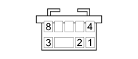

D160B DASHBOARD/OPTIONAL DASHBOARD COUPLING (DASHBOARD)
- Path
- Electrical equipment > 3 CONNECTORS > D INTERMEDIATE COUPLINGS > D160 DASHBOARD/OPTIONAL DASHBOARD COUPLING > D160B DASHBOARD/OPTIONAL DASHBOARD COUPLING (DASHBOARD)
- Kind
- connector pinout (pin -> wire colour -> other end)
- Applies to
- all engines; all production periods; only with equipment: Minibus and Van and Panorama and Combi
- Interactive page
- https://sloeber94.github.io/elrnDB-fDct/en/#/244002840
Applies to: all engines; all production periods; only with equipment: Minibus and Van and Panorama and Combi

Wiring | Colour |
|---|---|
BIANCO (white) |
Pin | Cable | Destination | |||
|---|---|---|---|---|---|
Sec.. | Colour | Node | Connect. | Pin | |
1 | 1,5 | AG (light blue with yellow stripe) | B1 | ||
2 | 1,5 | AG (light blue with yellow stripe) | B2 | ||
3 | 1,5 | CV (orange with green stripe) | B8 | ||
4 | 1,5 | CN (orange with black stripe) | B7 | ||
5 | 1,5 | NZ (black with violet stripe) | X | 2 | |
B4 | |||||
6 | 1,5 | SN (pink with black stripe) | X | 3 | |
B3 | |||||
7 | 1,5 | RN (red with black stripe) | X | B5 | |
3 | |||||
8 | 1,5 | BN (white with black stripe) | X | B6 | |
2 | |||||